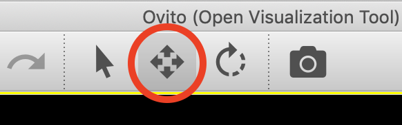
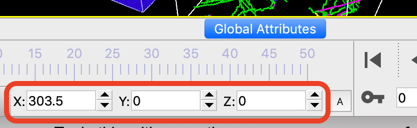

| Table of Contents | Visualizing multiple datasets | Up |
|---|---|---|
| Prev | Importing data | Next |
| Table of Contents | Visualizing multiple datasets | Up |
|---|---|---|
| Prev | Importing data | Next |
OVITO has the capability to manage several objects in the same three-dimensional scene. This enables you to import and visualize several datasets together in a single picture as shown on the right. You can also visualize a dataset in several different ways, either side by side or superimposed on each other, using branched data pipelines, which dynamically duplicate the imported data and process the copies in different ways.
The simplest way to visualize multiple datasets in one picture or animation is to invoke the → function from the menu several times to load all datasets into the same scene. When importing the second dataset, OVITO will ask you whether to replace the already loaded dataset or not. Select the "Add to scene" option here in order to insert it as an additional object into the existing scene.
The pipeline selector box shown in the screenshot lists all objects in the current scene and lets you switch between them. Each imported dataset has its own data pipeline associated with it. Thus, you can apply different modifiers to the individual datasets. The data pipeline of the currently selected dataset is displayed in the pipeline editor beneath the pipeline selector box.
OVITO places imported datasets in a default position relative to the scene's global coordinate system. Thus, when loading the second dataset into the same scene, it will appear superimposed in the same spatial location as the first dataset, which may not be what you want.
In order to correct this, you can move the individual objects around in the scene and arrange them as needed for your visualization. In the example picture at the top of this page the second dataset has been translated along the x-axis to place it next to the first dataset. To do this, use the Translate mode, which is found in the top toolbar above the viewports:
|
 |
 |
While the Translate mode is active, you can move objects around in the viewports using the mouse. Alternatively, you can enter the desired position of the selected object numerically using the input fields displayed in the status bar while the Translate mode is selected.
Instead of importing several data files into OVITO, you can also duplicate a dataset right in OVITO in order to visualize the data in various different ways, for example by applying different sets of modifiers to the replica of the dataset. See the Clone Pipeline function for more information.